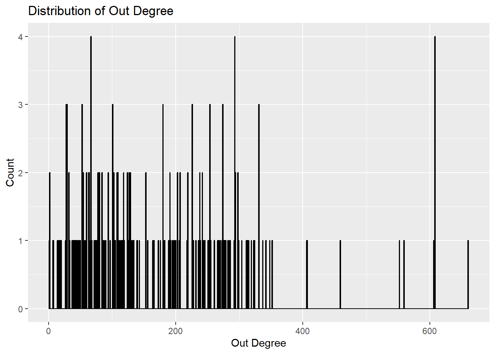
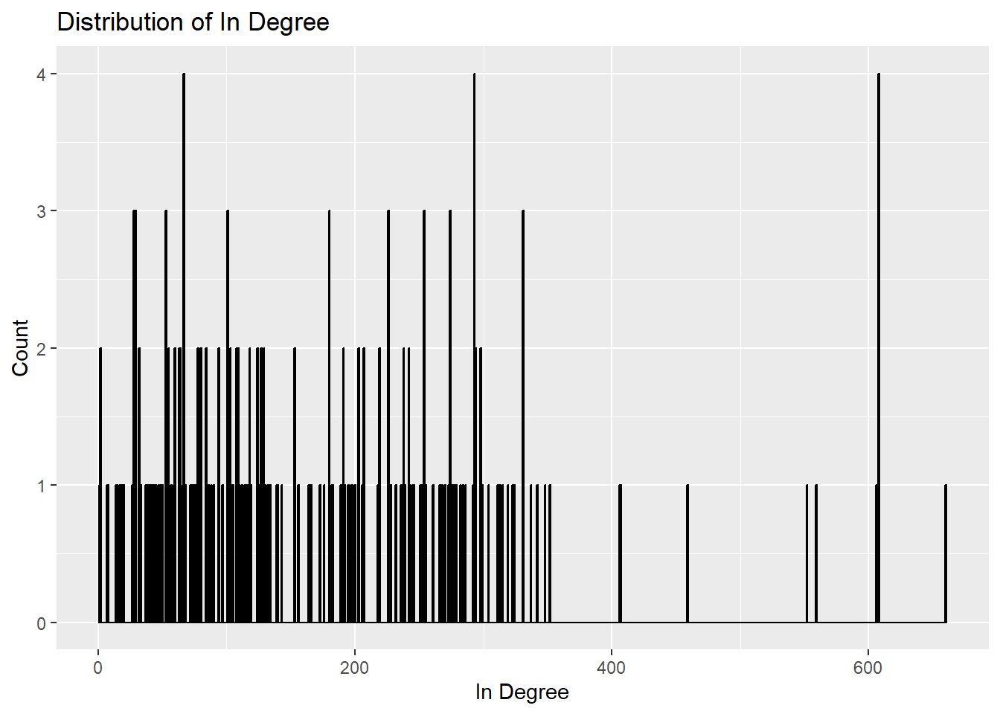
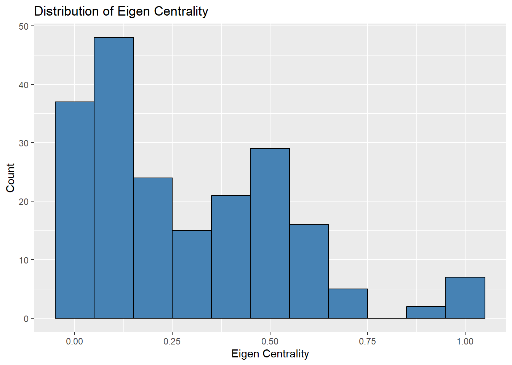
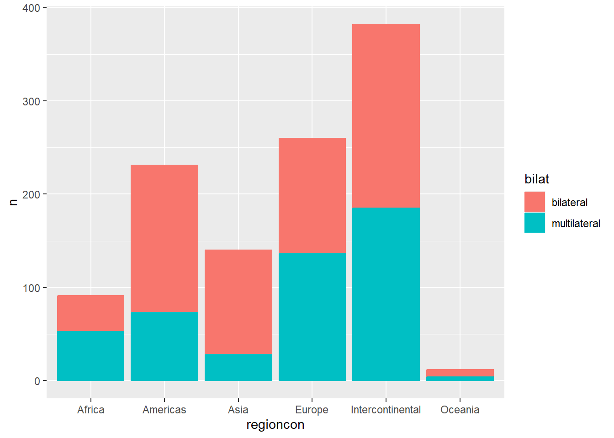
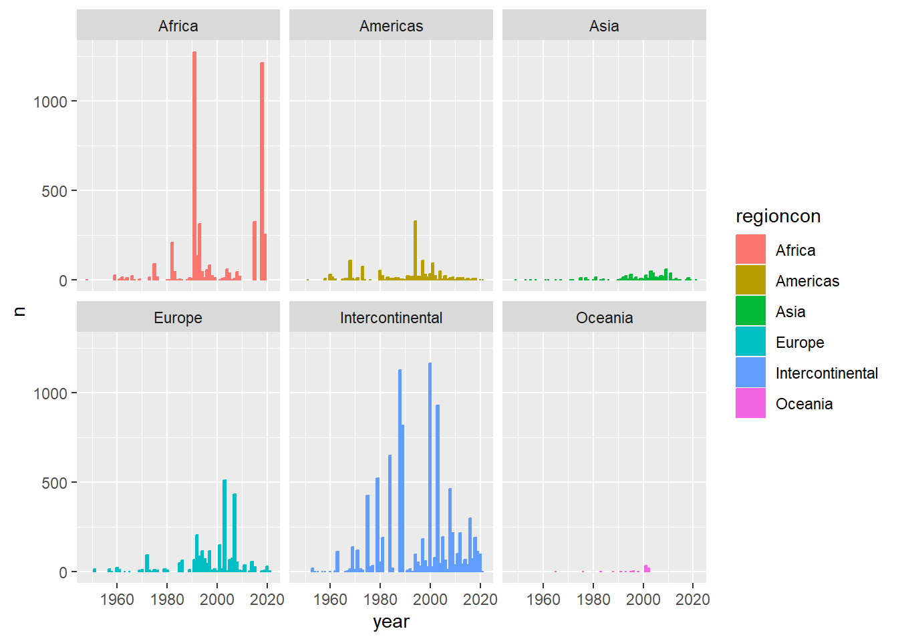
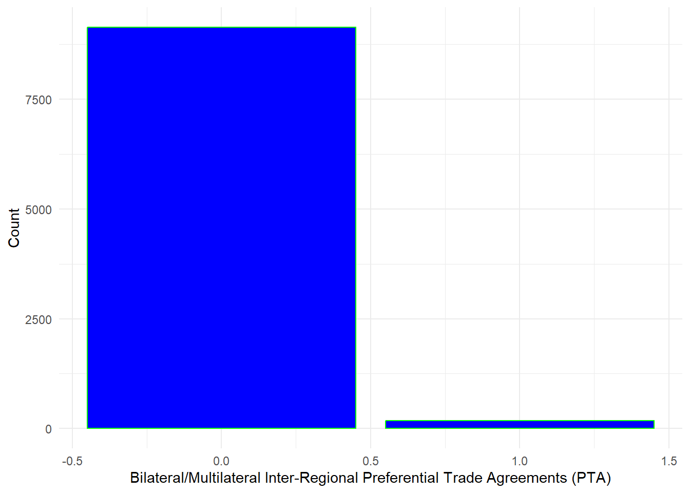
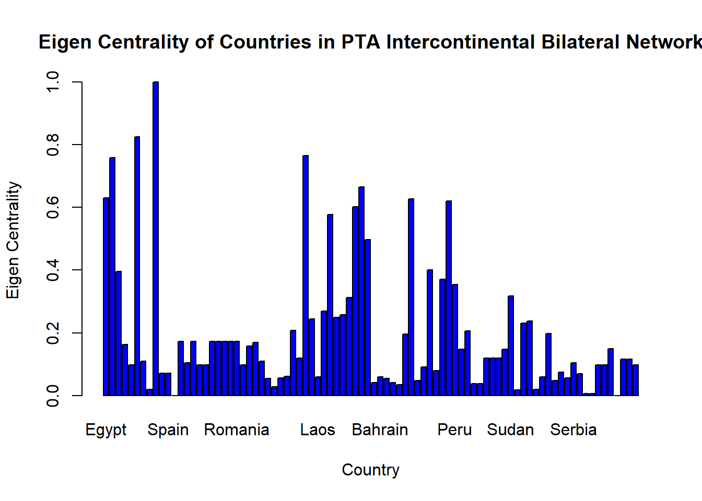
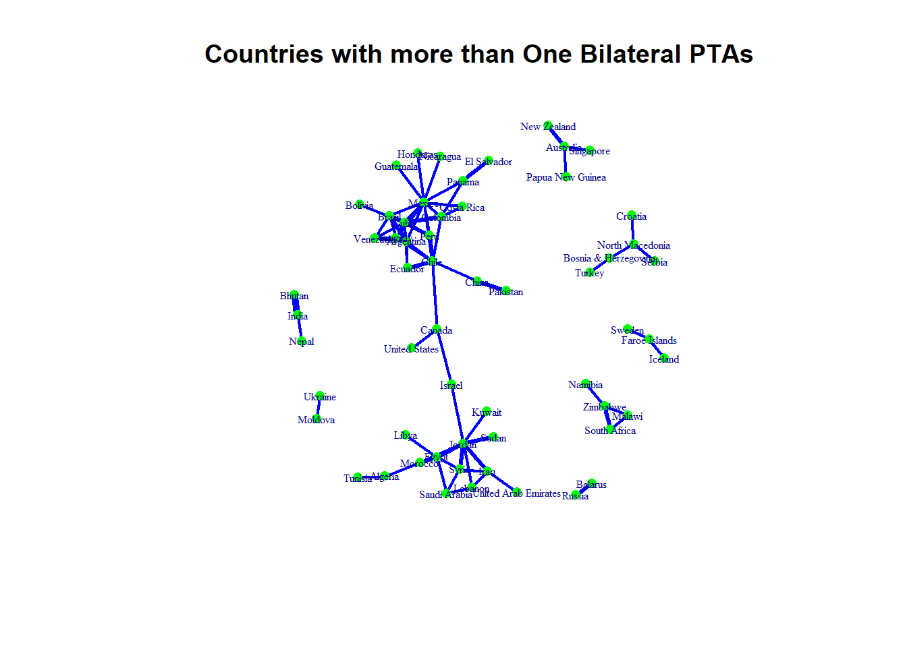
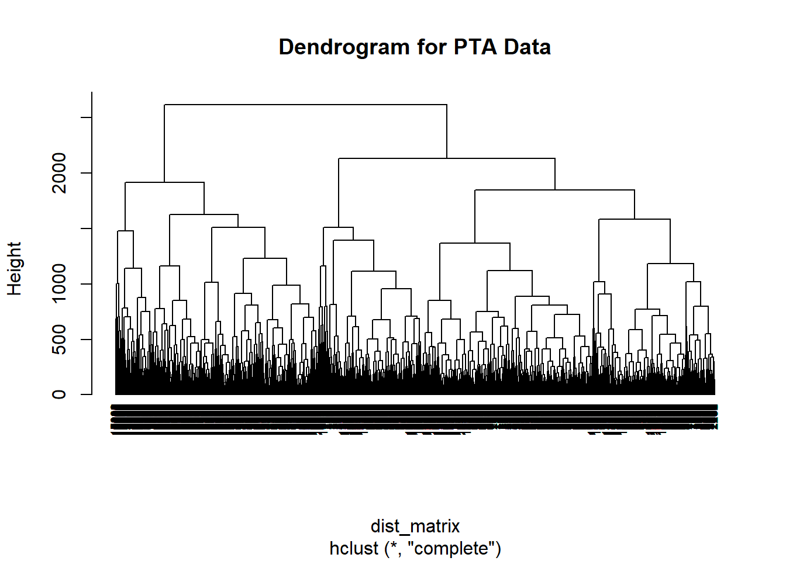

How does the network structure of Preferential Trade Agreements (PTAs) influence international trade patterns and economic integration among participating countries?
Hypothesis:
H1: A more dense network structure in Preferential Trade Agreements (PTAs) leads to increased trade flow and economic integration among participating countries.
Introduction:
In our Social Network Analysis course, Professor Rolfe highlighted the breadth of applications and emphasized the flexibility to examine any scenario that involved interactive systems. Taking this into account, I chose to focus my project on an area that piqued my personal interest - the intersection of travel and global trade.1
What is the source of the data?
The data utilized for this project are derived from the Design of Trade Agreements (DESTA) database https://www.designoftradeagreements.org/project-description/, a comprehensive resource documenting numerous aspects of Preferential Trade Agreements (PTAs) globally, which was found via the World Trade Organization(WTO). With data spanning PTAs ratified since 1945, the DESTA database offers an examination of the various provisions and areas encompassed by these agreements. Utilizing this dataset was key in bringing the theories and methodologies of Social Network Analysis into practice in a real-world context.
What is being measured
The Preferential Trade Agreement (PTA) data measures the bilateral agreements between countries that provide preferential access to certain products from the countries involved, reducing tariffs or duties below the level that each country charges other members of the World Trade Organization (WTO).
The data includes variables, such as the (nodes) countries/regions involved, the type of agreement (free trade agreement, customs union, etc.), the date the agreement came into effect, and trade parameters. *************************************************************************************
Data Format
It is provided as a matrix, where countries are listed both in rows and columns, and each cell in the matrix indicates whether a trade agreement exists between the two countries. Alternatively, it could be provided as an edgelist, where each row represents an agreement with two columns for the two countries involved. Sometimes, it might also be in the form of an affiliation network, representing memberships of different countries in different agreements. For the purposes of this project it is presented as a matrix.
Data
As previously stated the data for this project was derived from the Design of Trade Agreements database (DESTA). The data utilized are a universe of cases.
Wrangling and Exploration
Import DESTA data
Code
#preferential trade agreement data (pta)#DESTA List of Treatiesexcel_file <-"C:/Users/Bud/Downloads/desta_list_of_treaties_02_01_dyads.xlsx"desta_list <-read_excel(excel_file, sheet ="data")pta_data <-read_excel(path = excel_file, sheet =2) pta_data$regioncon <-as.factor(pta_data$regioncon)
# Remove rows with missing values in country1 or country2 columnspta_data <- pta_data[complete.cases(pta_data$country1, pta_data$country2), ]
Code
# Check for missing values in country1 and country2 columnsmissing_country1 <-sum(is.na(pta_data$country1))missing_country2 <-sum(is.na(pta_data$country2))# Print the number of missing valuescat("Number of missing values in country1 column:", missing_country1, "\n")cat("Number of missing values in country2 column:", missing_country2, "\n")
Adjacency Matrix for entire dataset
Code
dim(pta_data)
Code
pta_data[1:16, 1:16]
Code
#install and load the igraph packageif (!require(igraph)) {install.packages("igraph")library(igraph)}graph <-graph_from_data_frame(d = pta_data, directed =FALSE)# extract the adjacency matrixadj_matrix <-as_adjacency_matrix(graph)# Print the adjacency matrixprint(adj_matrix)
# Get the number of nodesnodes <-V(graph)# Calculate the proportion of non-zero entriesprop_nonzero <-sum(adj_matrix[] >0) /length(nodes) ^2# Print the proportionprint(prop_nonzero)
Analysis
The output value 0.3540465 indicates that, based on the pta_data, approximately 35.4% of all potential bilateral Preferential Trade Agreements (PTAs) among countries are in place. This shows a considerable degree of interconnectedness in global trade. It also suggests substantial room for more PTAs, as 64.6% of potential agreements are unexplored.
library(ggplot2)# histogram for all_degreeggplot(nodes, aes(x=all.degree)) +geom_histogram(binwidth=1, fill="steelblue", color="black") +ggtitle("Distribution of All Degree") +xlab("All Degree") +ylab("Count")
Code
# histogram for out_degreeggplot(nodes, aes(x=out.degree)) +geom_histogram(binwidth=1, fill="steelblue", color="black") +ggtitle("Distribution of Out Degree") +xlab("Out Degree") +ylab("Count")

Code
# histogram for in_degreeggplot(nodes, aes(x=in.degree)) +geom_histogram(binwidth=1, fill="steelblue", color="black") +ggtitle("Distribution of In Degree") +xlab("In Degree") +ylab("Count")

Code
# histogram for eigen_centralityggplot(nodes, aes(x=eigen.centrality)) +geom_histogram(binwidth=0.1, fill="steelblue", color="black") +ggtitle("Distribution of Eigen Centrality") +xlab("Eigen Centrality") +ylab("Count")

Analysis
This distribution reveals how nations in the PTA network interact. High degree centrality indicates a country’s extensive trade relationships. High out-degree signifies proactive trade agreement initiation, while high in-degree suggests a country’s attractiveness as a trade partner. Lastly, elevated eigenvector centrality reveals a nation’s importance within major trade blocs or networks.
Dyad and Triad Census
Code
dyad.census(nodes)
Warning in intcalc(dat): NAs introduced by coercion
Code
triad.census(nodes)
Warning in triad.census(nodes): NAs introduced by coercion
Data Exploration
This is a large dataset so I will focus on two variables; year and region. To better understand the data I will visualize it using the ggplot package from the tidyverse.
Code
# counts the frequency of ties between any two countries formed by year and region.pta_data_count <- pta_data %>%group_by(year, regioncon) %>%count(name) pta_data_count <- pta_data_count %>%arrange(desc(n))kable(head(pta_data_count), col.names =c("Year", "Region", "Agreement name", "Number of Ties"),caption ="Frequency of Ties Table")
library(igraph)# Create a graph from the pta_datapta_net <-graph_from_data_frame(d = pta_data_count, directed =TRUE)# Calculate the degree centralitydegree_centrality <- igraph::degree(pta_net, mode ="all")# Print the degree centrality valuesprint(degree_centrality)
In the context of degree centrality, the nodes with the highest degree centrality values can be considered the most important or influential nodes in the network. These nodes have a large number of connections (edges) with other nodes in the network.
Nodes(regions) with the highest degree centrality values are:
Europe: 260
Americas: 231
Asia: 140
Intercontinental: 382
These nodes represent regions or continents and have the highest number of connections with other nodes in the network. Therefore, they can be considered the most significant or influential network connectivity.
Betweenness Centrality
Code
library(igraph)# graph from the pta_data_countpta_net <-graph_from_data_frame(d = pta_data_count, directed = F)# betweenness centralitybetweenness_centrality <- igraph::betweenness(pta_net, directed = F)# Print the betweenness centrality valuesprint(betweenness_centrality)
Egypt, Jordan, and Morocco are identified as nodes with high betweenness centrality. These countries serve as key intermediaries in facilitating trade relationships and information exchange between other countries within the network.
On the other hand, nodes with lower betweenness centrality values, such as Albania or Armenia, have less influence in connecting different parts of the network. While they still contribute to the network structure, their impact on information flow and communication may be comparatively lower.
Summary of Preferential Trade Agreement data
Code
kable(summary(pta_data_count), col.names =c("Year", "Region", "Agreement name", "Number of Ties"), caption ="A Summary of the Frequency of Ties Data") #summary() provide a summary of the data
Overview
An overview of the data reveals six distinct categories: Africa, Americas, Asia, Europe, Oceania, and Intercontinental. Interestingly, most PTAs are Intercontinental, tallying 382 agreements, while Oceania, given the limited number of nations in the region, has only 12 intra-regional agreements.
The next stage of my exploration will involve identifying patterns of multilateral and bilateral PTA formation among different countries.
Code
#filter the new data: which countries tend to form multilateral PTAs and which countries tend to form bilateral PTAspta_data_count <- pta_data_count %>%mutate(bilat =ifelse(n ==1, "bilateral", "multilateral")) #creating a new variable to see if a tie belongs to a bilateral or multilateral treaty#png(filename = "network1.png") # save as pngpta_data_count$bilat <-as.factor(pta_data_count$bilat)region_count <- pta_data_count %>%group_by(regioncon, bilat) %>%count(regioncon)ggplot(region_count, aes(x= regioncon, y = n, color = bilat, fill = bilat)) +geom_col()

It’s observed that African nations exhibit a preference for multilateral PTAs as opposed to bilateral ones. Conversely, countries in the Americas and Asia predominantly lean towards bilateral PTAs. Europe and Oceania display an almost equal inclination towards both bilateral and multilateral PTAs. Of note when it comes to inter-regional PTAs, there appears to be no clear preference between bilateral and multilateral arrangements.
Creating a plot to visualize the number of ties formed annually by region reinforces indicates thats Africa is particularly prominent in terms of the number of ties established, as well as in forming intra-regional PTAs, with Europe following closely. Meanwhile, Asia, the Americas, and Oceania demonstrate a preference for forming bilateral agreements.
Code
#Visualizing ties formed annually by global region#png(filename = "network2.png") # save as pngggplot(pta_data_count, aes(x = year, y = n, color = regioncon, fill = regioncon)) +geom_col() +facet_wrap(~regioncon)

Indegree/ Outdegree of PTAs Intercontinental Region
Code
# indegree and outdegreeindegree <-colSums(as.matrix(as_adjacency_matrix(pta_intercon_net)))outdegree <-rowSums(as.matrix(as_adjacency_matrix(pta_intercon_net)))# data frame with indegree and outdegree valuesdegree_df <-data.frame(country =V(pta_intercon_net)$name, indegree = indegree, outdegree = outdegree)# Print the degree informationprint(degree_df)
country indegree
Egypt Egypt 174
Jordan Jordan 109
Morocco Morocco 145
Tunisia Tunisia 159
Albania Albania 1
Turkey Turkey 109
Algeria Algeria 128
Belgium Belgium 435
Denmark Denmark 388
France France 436
Germany Germany 435
Ireland Ireland 388
Italy Italy 435
Luxembourg Luxembourg 435
Netherlands Netherlands 435
United Kingdom United Kingdom 448
Portugal Portugal 218
Spain Spain 233
Austria Austria 151
Finland Finland 151
Sweden Sweden 152
Greece Greece 290
Cyprus Cyprus 142
Czechia Czechia 144
Estonia Estonia 144
Hungary Hungary 144
Latvia Latvia 143
Lithuania Lithuania 143
Malta Malta 142
Poland Poland 144
Slovakia Slovakia 144
Slovenia Slovenia 144
Bulgaria Bulgaria 144
Romania Romania 191
Croatia Croatia 120
Iraq Iraq 99
Syria Syria 91
Libya Libya 90
Armenia Armenia 59
Belarus Belarus 49
Moldova Moldova 30
Russia Russia 52
Ukraine Ukraine 64
Kenya Kenya 81
Tanzania Tanzania 127
Uganda Uganda 80
Australia Australia 78
Brunei Brunei 31
Cambodia Cambodia 7
Indonesia Indonesia 68
Laos Laos 8
Malaysia Malaysia 85
Myanmar (Burma) Myanmar (Burma) 7
Philippines Philippines 73
Singapore Singapore 148
Thailand Thailand 58
Vietnam Vietnam 137
New Zealand New Zealand 62
Canada Canada 63
Chile Chile 131
United States United States 21
Azerbaijan Azerbaijan 18
Bahrain Bahrain 42
Kazakhstan Kazakhstan 78
Kyrgyzstan Kyrgyzstan 43
Tajikistan Tajikistan 36
Bosnia & Herzegovina Bosnia & Herzegovina 2
Israel Israel 90
Iceland Iceland 34
Liechtenstein Liechtenstein 33
Norway Norway 33
Switzerland Switzerland 35
Antigua & Barbuda Antigua & Barbuda 78
Bahamas Bahamas 96
Barbados Barbados 96
Belize Belize 78
Dominica Dominica 87
Dominican Republic Dominican Republic 68
Grenada Grenada 96
Guyana Guyana 143
Haiti Haiti 115
Jamaica Jamaica 96
St. Kitts & Nevis St. Kitts & Nevis 78
St. Lucia St. Lucia 87
St. Vincent & Grenadines St. Vincent & Grenadines 78
Suriname Suriname 88
Trinidad & Tobago Trinidad & Tobago 143
China China 20
India India 70
Japan Japan 65
South Korea South Korea 118
Peru Peru 124
Colombia Colombia 84
Georgia Georgia 60
Turkmenistan Turkmenistan 14
Uzbekistan Uzbekistan 28
Côte d’Ivoire Côte d’Ivoire 108
Angola Angola 87
Benin Benin 127
Botswana Botswana 110
Burkina Faso Burkina Faso 80
Burundi Burundi 80
Cameroon Cameroon 128
Cape Verde Cape Verde 59
Central African Republic Central African Republic 80
Chad Chad 80
Comoros Comoros 87
Congo - Brazzaville Congo - Brazzaville 80
Congo - Kinshasa Congo - Kinshasa 127
Cook Islands Cook Islands 39
Djibouti Djibouti 78
Equatorial Guinea Equatorial Guinea 68
Eritrea Eritrea 28
Eswatini Eswatini 110
Ethiopia Ethiopia 68
Fiji Fiji 111
Gabon Gabon 80
Gambia Gambia 68
Ghana Ghana 116
Guinea Guinea 115
Guinea-Bissau Guinea-Bissau 68
Kiribati Kiribati 70
Lesotho Lesotho 110
Liberia Liberia 68
Madagascar Madagascar 109
Malawi Malawi 68
Mali Mali 80
Marshall Islands Marshall Islands 29
Mauritania Mauritania 99
Mauritius Mauritius 100
Micronesia (Federated States of) Micronesia (Federated States of) 29
Mozambique Mozambique 126
Namibia Namibia 70
Nauru Nauru 29
Niger Niger 80
Nigeria Nigeria 122
Niue Niue 39
Palau Palau 29
Papua New Guinea Papua New Guinea 103
Rwanda Rwanda 80
Samoa Samoa 114
São Tomé & Príncipe São Tomé & Príncipe 59
Senegal Senegal 80
Seychelles Seychelles 88
Sierra Leone Sierra Leone 68
Solomon Islands Solomon Islands 105
South Africa South Africa 98
Sudan Sudan 157
Togo Togo 80
Tonga Tonga 79
Tuvalu Tuvalu 70
Vanuatu Vanuatu 51
Zambia Zambia 69
Zimbabwe Zimbabwe 126
Timor-Leste Timor-Leste 28
Somalia Somalia 117
Bangladesh Bangladesh 54
Iran Iran 59
Pakistan Pakistan 70
Lebanon Lebanon 101
Mexico Mexico 118
Kuwait Kuwait 48
Oman Oman 42
Qatar Qatar 88
Saudi Arabia Saudi Arabia 50
United Arab Emirates United Arab Emirates 42
Palestinian Territories Palestinian Territories 38
El Salvador El Salvador 31
Honduras Honduras 31
Taiwan Taiwan 6
Argentina Argentina 60
Bolivia Bolivia 47
Brazil Brazil 75
Cuba Cuba 47
Ecuador Ecuador 82
Nicaragua Nicaragua 76
North Korea North Korea 47
Serbia Serbia 71
Sri Lanka Sri Lanka 48
Uruguay Uruguay 75
Venezuela Venezuela 53
Yemen Yemen 37
Guatemala Guatemala 33
Paraguay Paraguay 14
North Macedonia North Macedonia 1
Montenegro Montenegro 1
Panama Panama 36
Greenland Greenland 1
Costa Rica Costa Rica 35
Hong Kong SAR China Hong Kong SAR China 6
Kosovo Kosovo 1
outdegree
Egypt 174
Jordan 109
Morocco 145
Tunisia 159
Albania 1
Turkey 109
Algeria 128
Belgium 435
Denmark 388
France 436
Germany 435
Ireland 388
Italy 435
Luxembourg 435
Netherlands 435
United Kingdom 448
Portugal 218
Spain 233
Austria 151
Finland 151
Sweden 152
Greece 290
Cyprus 142
Czechia 144
Estonia 144
Hungary 144
Latvia 143
Lithuania 143
Malta 142
Poland 144
Slovakia 144
Slovenia 144
Bulgaria 144
Romania 191
Croatia 120
Iraq 99
Syria 91
Libya 90
Armenia 59
Belarus 49
Moldova 30
Russia 52
Ukraine 64
Kenya 81
Tanzania 127
Uganda 80
Australia 78
Brunei 31
Cambodia 7
Indonesia 68
Laos 8
Malaysia 85
Myanmar (Burma) 7
Philippines 73
Singapore 148
Thailand 58
Vietnam 137
New Zealand 62
Canada 63
Chile 131
United States 21
Azerbaijan 18
Bahrain 42
Kazakhstan 78
Kyrgyzstan 43
Tajikistan 36
Bosnia & Herzegovina 2
Israel 90
Iceland 34
Liechtenstein 33
Norway 33
Switzerland 35
Antigua & Barbuda 78
Bahamas 96
Barbados 96
Belize 78
Dominica 87
Dominican Republic 68
Grenada 96
Guyana 143
Haiti 115
Jamaica 96
St. Kitts & Nevis 78
St. Lucia 87
St. Vincent & Grenadines 78
Suriname 88
Trinidad & Tobago 143
China 20
India 70
Japan 65
South Korea 118
Peru 124
Colombia 84
Georgia 60
Turkmenistan 14
Uzbekistan 28
Côte d’Ivoire 108
Angola 87
Benin 127
Botswana 110
Burkina Faso 80
Burundi 80
Cameroon 128
Cape Verde 59
Central African Republic 80
Chad 80
Comoros 87
Congo - Brazzaville 80
Congo - Kinshasa 127
Cook Islands 39
Djibouti 78
Equatorial Guinea 68
Eritrea 28
Eswatini 110
Ethiopia 68
Fiji 111
Gabon 80
Gambia 68
Ghana 116
Guinea 115
Guinea-Bissau 68
Kiribati 70
Lesotho 110
Liberia 68
Madagascar 109
Malawi 68
Mali 80
Marshall Islands 29
Mauritania 99
Mauritius 100
Micronesia (Federated States of) 29
Mozambique 126
Namibia 70
Nauru 29
Niger 80
Nigeria 122
Niue 39
Palau 29
Papua New Guinea 103
Rwanda 80
Samoa 114
São Tomé & Príncipe 59
Senegal 80
Seychelles 88
Sierra Leone 68
Solomon Islands 105
South Africa 98
Sudan 157
Togo 80
Tonga 79
Tuvalu 70
Vanuatu 51
Zambia 69
Zimbabwe 126
Timor-Leste 28
Somalia 117
Bangladesh 54
Iran 59
Pakistan 70
Lebanon 101
Mexico 118
Kuwait 48
Oman 42
Qatar 88
Saudi Arabia 50
United Arab Emirates 42
Palestinian Territories 38
El Salvador 31
Honduras 31
Taiwan 6
Argentina 60
Bolivia 47
Brazil 75
Cuba 47
Ecuador 82
Nicaragua 76
North Korea 47
Serbia 71
Sri Lanka 48
Uruguay 75
Venezuela 53
Yemen 37
Guatemala 33
Paraguay 14
North Macedonia 1
Montenegro 1
Panama 36
Greenland 1
Costa Rica 35
Hong Kong SAR China 6
Kosovo 1
Analysis
We see that countries like Egypt, Jordan, Morocco, and Tunisia have relatively high indegree values, indicating that they receive a substantial number of connections from other countries.
On the other hand, outdegree represents the number of outgoing connections or links originating from a particular country. Higher outdegree values suggest that the country has more connections with other countries in the network. Countries like Belgium, Denmark, France, and Turkey have notable outdegree values, indicating that they have numerous connections with other countries.
Creating a Network of Intercontinental Regions
Code
# rechecking the first 6 rows of the datahead(pta_data)
We create a network using an edgelist as the data structure, allowing us to visualize the connections between global regions and the formation of PTAs. This approach enables us to analyze the structural patterns within the global PTA landscape.
# using the igraph package to create an edgelistedge_net <-graph_from_edgelist(cbind(head(pta_data$country1), head(pta_data$country2)),directed =FALSE) #png(filename = "network3.png") # save as pngset.seed(123) #randomizes the configuration of the plotplot.igraph(edge_net)
Subset of Adjacency matrix
The adjacency matrix of the Preferential Trade Agreement (PTA) dataset provides a representation of the bilateral trade relationships between countries participating in trade agreements. Each entry in the matrix indicates whether a specific pair of countries has established a preferential trade agreement or not. This binary representation allows us to identify the specific countries that are directly connected through these agreements.
By examining the adjacency matrix, we can observe the clustering and groupings of countries that have formed preferential trade agreements. These clusters indicate the presence of regional trade blocs or alliances, where countries within each cluster have established closer trade ties among themselves. Conversely, countries that are not connected in the adjacency matrix may have limited or no preferential trade agreements with other countries in the dataset.
Here we see that both graphs appear identical. This is attributed to the edge list and adjacency matrix representing an undirected network. In an undirected network, the connections between nodes are symmetric and bidirectional.
Network representation of countries based on their inter-regional Preferential Trade Agreements (PTAs)
This code enhances the Preferential Trade Agreement(PTA) network graph by attributing each trade agreement with its respective name and the year it was established.
Code
#The edges of the network are referred to as E$agt_name, representing the names of the PTAs, and E$year, representing the respective years of these PTAs.E(pta_intercon_net)$agt_name <- pta_intercon$nameE(pta_intercon_net)$year <- pta_intercon$year
Analysis
Of note, there may be duplicate edges between pairs of countries, indicating multiple PTAs formed between them. To address this, I assign a weight to each pair based on the number of shared PTAs. To simplify the network by removing loops and consolidating duplicate edges, I utilize the simplify() function from the igraph package. This process entails aggregating the weights of duplicate edges, ensuring a streamlined representation of the network.
Weights
Code
# Assigning weight 1 to all edgesE(pta_intercon_net)$weight <-1pta_intercon_simp <-graph.strength(pta_intercon_net, mode ="all", loops =FALSE)
Weights Discussion
I first normalize the relationships within the Preferential Trade Agreement (PTA) interconnection network. I do this by assigning a uniform weight of 1 to all edges, effectively treating all connections as equal. Following this, I calculate the strength, or degree, of each node in the network, which gives me the number of connections each node, or country, has within this network. In this calculation, I treat the network as undirected and exclude any loops. The resulting data offers a straightforward view of the interconnectedness of each country within the PTA network, under the assumption that all trade agreements hold the same importance or weight.
Vertices and Edges
Code
head(V(pta_intercon_net)$name)
Vertices and Edges
number of vertices,and edges in the network
Code
summary(pta_intercon_net)
Code
print(vcount(pta_intercon_net))
[1] 191
The summary indicates the number of vertices(nodes or countries)(191) and edges (9316) in the graph. The following line presents a list of attributes categorized by their kind (g for graph, v for vertex, and e for edge).
Network Visualizations
We will generate two separate plots: one depicting the Inter-regional PTA network consisting exclusively of Inter-regional PTAs, and another illustrating the Bilateral PTA network that includes Bilateral agreements regardless of whether they are Inter-regional or regional in nature.
# Bar plot of Bilateral networkE(pta_intercon_net)$bilateral <-ifelse(pta_intercon$typememb ==1, 1,0)bilateral_var <-as.data.frame(E(pta_intercon_net)$bilateral)ggplot(bilateral_var, aes(x =E(pta_intercon_net)$bilateral)) +geom_bar(fill ="blue", color ="green") +theme_minimal() +labs(x ="Bilateral/Multilateral Inter-Regional Preferential Trade Agreements (PTA)", y ="Count")

Code
#png(filename = "network4.png") # save as png
The bar plot shows the distribution and relative importance of bilateral and multilateral Preferential Trade Agreements (PTAs) within the framework of social network analysis applied to inter-regional trade relationships. Notably, the left bar exhibits a considerably higher frequency of PTAs compared to the right bar, indicating a distinct prevalence of bilateral PTAs in the network. Conversely,the lower frequency of multilateral PTAs on the right bar signifies a relatively reduced presence of agreements involving multiple nations in the network. Multilateral PTAs typically require more extensive negotiations and coordination among a larger number of countries. The scarcity of such agreements suggests a less pronounced emphasis on broader inter-regional collaboration within the analyzed trade network.
I plot an Eigen centrality for the intercontinetal region which quantifies a country’s influence by factoring both the quantity and quality of its trade agreements.
Code
# eigen centrality V(pta_intercon_bilat)$eigen_cen <-eigen_centrality(pta_intercon_bilat)$vectorprint((V(pta_intercon_bilat)))eigen_cen <-eigen_centrality(pta_intercon_bilat)$vector# bar plotbarplot(eigen_cen, names.arg =V(pta_intercon_bilat)$name, xlab ="Country", ylab ="Eigen Centrality", col ="blue")title(main ="Eigen Centrality of Countries in PTA Intercontinental Bilateral Network")

Code
#png(filename = "network8.png") # save as png
Analysis
This bar plot represents the eigen centrality values of countries in the PTA Intercontinental Bilateral network. This visualization helps to analyze and interpret the relative importance of countries based on their connections within the network. Countries with higher eigen centrality scores are considered more influential and have stronger trade relationships, while those with lower scores have less impact. This helps identify key players and the distribution of power within the PTA network.
pta_bilat_2 <-subgraph.edges(pta_bilat_simp,which(E(pta_bilat_simp)$weight >1))plot.igraph(pta_bilat_2,vertex.size =5,vertex.color ="green",vekrtex.label =V(pta_bilat_2)$name,vertex.label.cex = .5,vertex.frame.color =NA,layout = layout.fruchterman.reingold,edge.width =E(pta_bilat_2)$weight,main ="Countries with more than One Bilateral PTAs" )

Code
png(filename ="network11.png") # save as png
Community
Walktrap Algorithim
For this project examining the Preferential Trade Agreement (PTA) network, I use the Walktrap algorithm, we examined in the 7th tutorial. This approach seeks to find communities within this complex trade network by employing random walks. The guiding principle behind this method is that shorter, random walks will likely stay within the confines of a single community. By applying the Walktrap algorithm to the PTA network, I aim to discern the community structures present within this global trade landscape, thereby shedding light on the intricate dynamics and patterns that shape international trade agreements.
# walktrap algorithim output data is in a vector named "output"output <-c(11, 14, 18, 4, 2, 20, 3, 12, 2)# data frameoutput_df <-data.frame("Community"=paste0("Community_", 1:length(output)),"Size"= output)# Print the data frameprint(output_df)
The Walktrap algorithm’s output portrays the distribution of nodes across various communities in the Preferential Trade Agreement (PTA) network. Each community number is paired with a value that signifies the count of nodes (or countries) within that specific community.
Here is what we can infer:
Community 1 consists of 11 nodes.
Community 2 has 14 nodes.
Community 3 comprises 18 nodes.
Community 4 includes 4 nodes.
Community 5 houses 2 nodes.
Community 6 holds 20 nodes.
Community 7 encapsulates 3 nodes.
Community 8 encompasses 12 nodes.
Community 9 shelters 2 nodes.
This distribution provides a snapshot of the diverse interconnectedness among global trade relationships in the PTA network. Communities with larger node counts might represent robustly interconnected trading partnerships, while smaller communities may indicate more specific or self-contained trade relationships.
Density
PTA Bilateral Density Analysis
The value 0.04924761 represents the bilateral density in the context of the Preferential Trade Agreement (PTA) dataset. Network density measures the actual connections in a network relative to the total possible connections.
Here, a density of 0.04924761 suggests that nearly 4.92% of all potential bilateral trade agreements among countries are realized. This means, on an average, a country in the network has a trade agreement with approximately 4.92% of all other potential trading partners. Given that this value is relatively low, it indicates that the bilateral trade network is sparsely connected, suggesting the potential for many more trade agreements to be formed.
Transitivity
PTA Bilateral Transitivity
Code
bilat_transitivity
Analysis
In the context of the Preferential Trade Agreement (PTA) dataset, a bilateral transitivity of 0.1098987 signifies that about 11% of the potential triangular trade relationships among countries are realized. This implies that if two countries both have a PTA with a third one, there is an approximately 11% probability that these two countries will also have a trade agreement directly with each other.
This relatively low transitivity index suggests that the formation of PTAs is not extensively based on the principle of transitivity. Rather, it underscores that the establishment of PTAs among countries may be influenced by a multitude of factors, including geographical proximity and political or economic dynamics.
Dendrogram
Dendrogram
In the context of the Preferential Trade Agreement (PTA) dataset focusing on the variables, the dendrogram emerged as an influential graphical representation. It conveys the nested arrangement of relationships among countries or corresponding trade agreements, an arrangement that is guided by specified attributes or significant performance indicators. This hierarchical classification reveals nuanced patterns in international trade interactions, which contributes to a better understanding of intricate PTAs.
Code
dist_matrix <-dist(pta_data)
Warning in dist(pta_data): NAs introduced by coercion
Code
# Hierarchical clustering using complete linkagehc <-hclust(dist_matrix, method ="complete")# Plot dendrogramplot(hc, hang =-1, cex =0.6, main ="Dendrogram for PTA Data")

Code
#png(filename = "network9.png") # save as png
Discussion
The Preferential Trade Agreement (PTA) dataset, spanning from 1958 to 2021, offers a comprehensive view into the evolution of global trade relationships. Delving into this dataset has afforded me a richer understanding of social network analysis in the context of international trade. This journey, albeit marked by a steep learning curve, has been an enlightening one.
The dominance of bilateral PTAs suggests that countries in the network tend to engage in preferential trade arrangements on a bilateral basis, forming direct connections with specific trading partners. This finding underscores the significance of bilateral relationships in shaping the overall structure of the inter-regional trade network. Bilateral PTAs are often favored due to their simplicity in negotiation and implementation, enabling countries to establish tailored agreements that cater to their specific needs and preferences.2 These agreements facilitate focused interactions between pairs of countries, fostering closer economic ties and potentially enhancing trade efficiency and cooperation.
Conclusion/Reflection
Prior to this project, the critical role that variable selection plays in shaping network interpretation was an aspect I hadn’t fully appreciated. Now, I understand that even with the PTA dataset, or for any social network analysis, significant effort can be poured into understanding the relationships between just a couple of variables to derive meaningful insights. Upon reflection, the prospect of analyzing data from more recent years to assess how key features like node centrality,transitivity,density and community structure have evolved in the midst of global challenges like the COVID-19 pandemic would merit future study, especially considering recent challenges in global trade and supply chain restrictions.
Despite the hurdles encountered, the process of dissecting this dataset has been rewarding. Every decision made echoed in the analysis outcomes, underscoring the potential for subtle shifts to lead to major interpretation changes. I plan to continue my exploration of the PTA data and branch out to related projects to enhance my understanding of Social Network Analysis.
---title: "A Network Analysis of Global Preferential Trade Agreements (PTAs)"author: "Cynthia Hester"description: "DACSS 697E Social Networks Analysis Final Project"date: "05/20/2023"format: html: toc: true code-fold: true code-copy: true code-tools: truecategories: - Cynthia Hester - Final_Project - Preferential Trade Agreements (PTAs) - Network of International Trade Agreements---```{r,include=FALSE}#| label: setup#| include: falselibrary(tidyverse)knitr::opts_chunk$set(echo =TRUE)``````{r,include=FALSE}### Load necessary librarieslibrary(RColorBrewer)library(tidyverse)library(igraph)library(intergraph)library(tidyr)library(statnet)library(readr)library(readxl)library(kableExtra)library(sna)library(knitr)library(network)library(quarto)```# Research Question:How does the network structure of Preferential Trade Agreements (PTAs) influence international trade patterns and economic integration among participating countries?## Hypothesis:H1: A more dense network structure in Preferential Trade Agreements (PTAs) leads to increased trade flow and economic integration among participating countries.## Introduction:In our Social Network Analysis course, Professor Rolfe highlighted the breadth of applications and emphasized the flexibility to examine any scenario that involved interactive systems. Taking this into account, I chose to focus my project on an area that piqued my personal interest - the intersection of travel and global trade.[^1]**What is the source of the data?**The data utilized for this project are derived from the Design of Trade Agreements (DESTA) database https://www.designoftradeagreements.org/project-description/, a comprehensive resource documenting numerous aspects of Preferential Trade Agreements (PTAs) globally, which was found via the World Trade Organization(WTO). With data spanning PTAs ratified since 1945, the DESTA database offers an examination of the various provisions and areas encompassed by these agreements. Utilizing this dataset was key in bringing the theories and methodologies of Social Network Analysis into practice in a real-world context.**What is being measured**The **Preferential Trade Agreement** (PTA) data measures the bilateral agreements between countries that provide preferential access to certain products from the countries involved, reducing tariffs or duties below the level that each country charges other members of the World Trade Organization (WTO).The data includes variables, such as the (nodes) countries/regions involved, the type of agreement (free trade agreement, customs union, etc.), the date the agreement came into effect, and trade parameters.***************************************************************************************Data Format**It is provided as a matrix, where countries are listed both in rows and columns, and each cell in the matrix indicates whether a trade agreement exists between the two countries. Alternatively, it could be provided as an edgelist, where each row represents an agreement with two columns for the two countries involved. Sometimes, it might also be in the form of an affiliation network, representing memberships of different countries in different agreements. For the purposes of this project it is presented as a matrix.## DataAs previously stated the data for this project was derived from the Design of Trade Agreements database (DESTA). The data utilized are a universe of cases.## Wrangling and Exploration#### Import DESTA data```{r,results='hide'}#preferential trade agreement data (pta)#DESTA List of Treatiesexcel_file <-"C:/Users/Bud/Downloads/desta_list_of_treaties_02_01_dyads.xlsx"desta_list <-read_excel(excel_file, sheet ="data")pta_data <-read_excel(path = excel_file, sheet =2) pta_data$regioncon <-as.factor(pta_data$regioncon)```*************************************************************************************## Inspect PTA trade agreement data/ Descriptive Statistics```{r,results='hide'}summary(pta_data)``````{r,results='hide'}#first few rows of the datahead(pta_data) #look at the structure of the data``````{r,results='hide'}#inspect the datastr(pta_data) ``````{r,results='hide'}missing_values <-sapply(pta_data, function(x) sum(is.na(x)))missing_values``````{r,results='hide'}# Remove rows with missing values in country1 or country2 columnspta_data <- pta_data[complete.cases(pta_data$country1, pta_data$country2), ]``````{r,results='hide'}# Check for missing values in country1 and country2 columnsmissing_country1 <-sum(is.na(pta_data$country1))missing_country2 <-sum(is.na(pta_data$country2))# Print the number of missing valuescat("Number of missing values in country1 column:", missing_country1, "\n")cat("Number of missing values in country2 column:", missing_country2, "\n")```***********************************************************************************#### Adjacency Matrix for entire dataset```{r,results='hide'}dim(pta_data)``````{r,results='hide'} pta_data[1:16, 1:16]``````{r,results='hide'}#install and load the igraph packageif (!require(igraph)) {install.packages("igraph")library(igraph)}graph <-graph_from_data_frame(d = pta_data, directed =FALSE)# extract the adjacency matrixadj_matrix <-as_adjacency_matrix(graph)# Print the adjacency matrixprint(adj_matrix)```nodes(countries)```{r,results='hide'}vcount(graph)```edges(trade ties)```{r,results='hide'}ecount(graph)```Calculating proportion of nodes ```{r,results='hide'}# Get the number of nodesnodes <-V(graph)# Calculate the proportion of non-zero entriesprop_nonzero <-sum(adj_matrix[] >0) /length(nodes) ^2# Print the proportionprint(prop_nonzero)```*********************************************************************************Analysis**The output value 0.3540465 indicates that, based on the **pta_data**, approximately 35.4% of all potential bilateral Preferential Trade Agreements (PTAs) among countries are in place. This shows a considerable degree of interconnectedness in global trade. It also suggests substantial room for more PTAs, as 64.6% of potential agreements are unexplored.```{r,results='hide'}nodes <-data.frame(name =V(graph)$name,all.degree = igraph::degree(graph), out.degree = igraph::degree(graph, mode ='out'),in.degree = igraph::degree(graph, mode ='in'), total.degree = igraph::degree(graph, mode ='total'),eigen.centrality = igraph::eigen_centrality(graph)$vector)head(nodes)```************************************************************************************Distribution**```{r,results='hide'}library(ggplot2)# histogram for all_degreeggplot(nodes, aes(x=all.degree)) +geom_histogram(binwidth=1, fill="steelblue", color="black") +ggtitle("Distribution of All Degree") +xlab("All Degree") +ylab("Count")# histogram for out_degreeggplot(nodes, aes(x=out.degree)) +geom_histogram(binwidth=1, fill="steelblue", color="black") +ggtitle("Distribution of Out Degree") +xlab("Out Degree") +ylab("Count")# histogram for in_degreeggplot(nodes, aes(x=in.degree)) +geom_histogram(binwidth=1, fill="steelblue", color="black") +ggtitle("Distribution of In Degree") +xlab("In Degree") +ylab("Count")# histogram for eigen_centralityggplot(nodes, aes(x=eigen.centrality)) +geom_histogram(binwidth=0.1, fill="steelblue", color="black") +ggtitle("Distribution of Eigen Centrality") +xlab("Eigen Centrality") +ylab("Count")```**Analysis**This distribution reveals how nations in the PTA network interact. High degree centrality indicates a country's extensive trade relationships. High out-degree signifies proactive trade agreement initiation, while high in-degree suggests a country's attractiveness as a trade partner. Lastly, elevated eigenvector centrality reveals a nation's importance within major trade blocs or networks.*************************************************************************************## Dyad and Triad Census```{r,results='hide'}dyad.census(nodes)``````{r,results='hide'}triad.census(nodes)```## Data ExplorationThis is a large dataset so I will focus on two variables; **year and region**. To better understand the data I will visualize it using the ggplot package from the tidyverse.```{r,results='hide'}# counts the frequency of ties between any two countries formed by year and region.pta_data_count <- pta_data %>%group_by(year, regioncon) %>%count(name) pta_data_count <- pta_data_count %>%arrange(desc(n))kable(head(pta_data_count), col.names =c("Year", "Region", "Agreement name", "Number of Ties"),caption ="Frequency of Ties Table")```*******************************************************************************## CentralityIntercontinental Region```{r,results='hide'}pta_intercon <- pta_data %>%filter(regioncon =="Intercontinental")pta_intercon_net <-graph_from_edgelist(cbind(pta_intercon$country1, pta_intercon$country2), directed = F)``` **Degree Centrality Intercontinental Region**```{r}library(igraph)# Create a graph from the pta_datapta_net <-graph_from_data_frame(d = pta_data_count, directed =TRUE)# Calculate the degree centralitydegree_centrality <- igraph::degree(pta_net, mode ="all")# Print the degree centrality valuesprint(degree_centrality)```**Degree Centrality Analysis**In the context of degree centrality, the nodes with the highest degree centrality values can be considered the most important or influential nodes in the network. These nodes have a large number of connections (edges) with other nodes in the network. Nodes(regions) with the highest degree centrality values are:- Europe: 260- Americas: 231- Asia: 140- Intercontinental: 382These nodes represent regions or continents and have the highest number of connections with other nodes in the network. Therefore, they can be considered the most significant or influential network connectivity.**Betweenness Centrality**```{r}library(igraph)# graph from the pta_data_countpta_net <-graph_from_data_frame(d = pta_data_count, directed = F)# betweenness centralitybetweenness_centrality <- igraph::betweenness(pta_net, directed = F)# Print the betweenness centrality valuesprint(betweenness_centrality)```**Betweenness Analysis**Egypt, Jordan, and Morocco are identified as nodes with high betweenness centrality. These countries serve as key intermediaries in facilitating trade relationships and information exchange between other countries within the network.On the other hand, nodes with lower betweenness centrality values, such as Albania or Armenia, have less influence in connecting different parts of the network. While they still contribute to the network structure, their impact on information flow and communication may be comparatively lower.*********************************************************************************Summary of Preferential Trade Agreement data**```{r,results='hide'}kable(summary(pta_data_count), col.names =c("Year", "Region", "Agreement name", "Number of Ties"), caption ="A Summary of the Frequency of Ties Data") #summary() provide a summary of the data```## OverviewAn overview of the data reveals six distinct categories: Africa, Americas, Asia, Europe, Oceania, and Intercontinental. Interestingly, most PTAs are Intercontinental, tallying 382 agreements, while Oceania, given the limited number of nations in the region, has only 12 intra-regional agreements.The next stage of my exploration will involve identifying patterns of multilateral and bilateral PTA formation among different countries.```{r,results='hide'}#filter the new data: which countries tend to form multilateral PTAs and which countries tend to form bilateral PTAspta_data_count <- pta_data_count %>%mutate(bilat =ifelse(n ==1, "bilateral", "multilateral")) #creating a new variable to see if a tie belongs to a bilateral or multilateral treaty#png(filename = "network1.png") # save as pngpta_data_count$bilat <-as.factor(pta_data_count$bilat)region_count <- pta_data_count %>%group_by(regioncon, bilat) %>%count(regioncon)ggplot(region_count, aes(x= regioncon, y = n, color = bilat, fill = bilat)) +geom_col()```It's observed that African nations exhibit a preference for multilateral **PTAs** as opposed to bilateral ones. Conversely, countries in the Americas and Asia predominantly lean towards bilateral **PTAs**. Europe and Oceania display an almost equal inclination towards both bilateral and multilateral **PTAs**. Of note when it comes to inter-regional PTAs, there appears to be no clear preference between bilateral and multilateral arrangements.*******************************************************************************Creating a plot to visualize the number of ties formed annually by region reinforces indicates thats Africa is particularly prominent in terms of the number of ties established, as well as in forming intra-regional PTAs, with Europe following closely. Meanwhile, Asia, the Americas, and Oceania demonstrate a preference for forming bilateral agreements.```{r,results='hide'}#Visualizing ties formed annually by global region#png(filename = "network2.png") # save as pngggplot(pta_data_count, aes(x = year, y = n, color = regioncon, fill = regioncon)) +geom_col() +facet_wrap(~regioncon)```Indegree/ Outdegree of PTAs Intercontinental Region```{r}# indegree and outdegreeindegree <-colSums(as.matrix(as_adjacency_matrix(pta_intercon_net)))outdegree <-rowSums(as.matrix(as_adjacency_matrix(pta_intercon_net)))# data frame with indegree and outdegree valuesdegree_df <-data.frame(country =V(pta_intercon_net)$name, indegree = indegree, outdegree = outdegree)# Print the degree informationprint(degree_df)```**Analysis**We see that countries like Egypt, Jordan, Morocco, and Tunisia have relatively high indegree values, indicating that they receive a substantial number of connections from other countries.On the other hand, outdegree represents the number of outgoing connections or links originating from a particular country. Higher outdegree values suggest that the country has more connections with other countries in the network. Countries like Belgium, Denmark, France, and Turkey have notable outdegree values, indicating that they have numerous connections with other countries.*******************************************************************************## Creating a Network of Intercontinental Regions```{r,results='hide'}# rechecking the first 6 rows of the datahead(pta_data)```We create a network using an edgelist as the data structure, allowing us to visualize the connections between global regions and the formation of PTAs. This approach enables us to analyze the structural patterns within the global PTA landscape.```{r,results='hide'}temp_graph <-graph_from_edgelist(cbind(head(pta_data$country1), head(pta_data$country2)), directed = F)get.adjacency(temp_graph)```**Edgelist**```{r,results='hide'}cbind(head(pta_data$country1), head(pta_data$country2))``````{r,results='hide'}# using the igraph package to create an edgelistedge_net <-graph_from_edgelist(cbind(head(pta_data$country1), head(pta_data$country2)),directed =FALSE) #png(filename = "network3.png") # save as pngset.seed(123) #randomizes the configuration of the plotplot.igraph(edge_net)```**Subset of Adjacency matrix**The adjacency matrix of the Preferential Trade Agreement (PTA) dataset provides a representation of the bilateral trade relationships between countries participating in trade agreements. Each entry in the matrix indicates whether a specific pair of countries has established a preferential trade agreement or not. This binary representation allows us to identify the specific countries that are directly connected through these agreements.By examining the adjacency matrix, we can observe the clustering and groupings of countries that have formed preferential trade agreements. These clusters indicate the presence of regional trade blocs or alliances, where countries within each cluster have established closer trade ties among themselves. Conversely, countries that are not connected in the adjacency matrix may have limited or no preferential trade agreements with other countries in the dataset.```{r,results='hide'}get.adjacency(edge_net)``````{r,results='hide'}matrix_net <-graph_from_adjacency_matrix(get.adjacency(edge_net), mode ="undirected")set.seed(123) plot.igraph(matrix_net)```Here we see that both graphs appear identical. This is attributed to the edge list and adjacency matrix representing an undirected network. In an undirected network, the connections between nodes are symmetric and bidirectional.Network representation of countries based on their inter-regional Preferential Trade Agreements (PTAs)*********************************************************************************This code enhances the Preferential Trade Agreement(PTA) network graph by attributing each trade agreement with its respective name and the year it was established.```{r,results='hide'}#The edges of the network are referred to as E$agt_name, representing the names of the PTAs, and E$year, representing the respective years of these PTAs.E(pta_intercon_net)$agt_name <- pta_intercon$nameE(pta_intercon_net)$year <- pta_intercon$year```**Analysis**Of note, there may be duplicate edges between pairs of countries, indicating multiple PTAs formed between them. To address this, I assign a weight to each pair based on the number of shared PTAs. To simplify the network by removing loops and consolidating duplicate edges, I utilize the simplify() function from the igraph package. This process entails aggregating the weights of duplicate edges, ensuring a streamlined representation of the network.**Weights**```{r,results='hide'}# Assigning weight 1 to all edgesE(pta_intercon_net)$weight <-1pta_intercon_simp <-graph.strength(pta_intercon_net, mode ="all", loops =FALSE)```**Weights Discussion**I first normalize the relationships within the Preferential Trade Agreement (PTA) interconnection network. I do this by assigning a uniform weight of 1 to all edges, effectively treating all connections as equal. Following this, I calculate the strength, or degree, of each node in the network, which gives me the number of connections each node, or country, has within this network. In this calculation, I treat the network as undirected and exclude any loops. The resulting data offers a straightforward view of the interconnectedness of each country within the PTA network, under the assumption that all trade agreements hold the same importance or weight.#### Vertices and Edges```{r,results='hide'}head(V(pta_intercon_net)$name)```**Vertices and Edges**number of vertices,and edges in the network```{r,results='hide'}summary(pta_intercon_net)``````{r}print(vcount(pta_intercon_net))```The summary indicates the number of **vertices(nodes or countries)** **(191)** and edges **(9316)** in the graph. The following line presents a list of attributes categorized by their kind (g for graph, v for vertex, and e for edge).********************************************************************************## Network VisualizationsWe will generate two separate plots: one depicting the Inter-regional PTA network consisting exclusively of Inter-regional PTAs, and another illustrating the Bilateral PTA network that includes Bilateral agreements regardless of whether they are Inter-regional or regional in nature.```{r,results='hide'}pta_bilat <- pta_data %>%filter(typememb ==1)pta_bilat_net <-graph_from_data_frame(d = pta_bilat, directed =FALSE)E(pta_bilat_net)$agt_name <- pta_bilat$nameE(pta_bilat_net)$year <- pta_bilat$yearE(pta_bilat_net)$weight <-1pta_bilat_simp <-simplify(pta_bilat_net)```Network depiction of Inter-regional Preferential Trade Agreements (PTA)```{r,results='hide'}set.seed(123)plot.igraph(pta_intercon_net,vertex.size =5,vertex.color ="red",vertex.label =V(pta_intercon_net)$name,vertex.label.cex = .5,vertex.frame.color =NA,layout = layout.fruchterman.reingold,main ="Network of Inter-regional Preferential Trade Agreements(PTA)" )```Using all of the data depicts a "hairball" I will therefore use a subset of the data for more comprehensible data representation.```{r,results='hide'}E(pta_bilat_simp)$color <-ifelse(E(pta_bilat_simp)$weight >1,'blue', 'grey')plot.igraph(pta_bilat_simp,vertex.size =5,vertex.color ="red",vekrtex.label =V(pta_bilat_simp)$name,vertex.label.cex = .5,vertex.frame.color =NA,layout = layout.fruchterman.reingold,edge.width =E(pta_bilat_simp)$weight,main ="Network of Bilateral Preferential Trade Agreements(PTA)" )``````{r,results='hide'}# Bar plot of Bilateral networkE(pta_intercon_net)$bilateral <-ifelse(pta_intercon$typememb ==1, 1,0)bilateral_var <-as.data.frame(E(pta_intercon_net)$bilateral)ggplot(bilateral_var, aes(x =E(pta_intercon_net)$bilateral)) +geom_bar(fill ="blue", color ="green") +theme_minimal() +labs(x ="Bilateral/Multilateral Inter-Regional Preferential Trade Agreements (PTA)", y ="Count")#png(filename = "network4.png") # save as png```The bar plot shows the distribution and relative importance of bilateral and multilateral Preferential Trade Agreements (PTAs) within the framework of social network analysis applied to inter-regional trade relationships. Notably, the left bar exhibits a considerably higher frequency of PTAs compared to the right bar, indicating a distinct prevalence of bilateral PTAs in the network.Conversely,the lower frequency of multilateral PTAs on the right bar signifies a relatively reduced presence of agreements involving multiple nations in the network. Multilateral PTAs typically require more extensive negotiations and coordination among a larger number of countries. The scarcity of such agreements suggests a less pronounced emphasis on broader inter-regional collaboration within the analyzed trade network.******************************************************************************```{r,results='hide'}#bilateral inter-regional PTAspta_intercon_bilat <-subgraph.edges(pta_intercon_net,which(E(pta_intercon_net)$bilateral ==1))plot(pta_intercon_bilat,vertex.size =5,vertex.color ="red",vertex.label =V(pta_intercon_bilat)$name,vertex.label.cex = .5,vertex.frame.color =NA,layout = layout.fruchterman.reingold,main ="Network of Bilateral Inter-regional PTAs")#(filename = "network5.png") # save as png```**Eigen Centrality Intercontinental Region**I plot an Eigen centrality for the intercontinetal region which quantifies a country's influence by factoring both the quantity and quality of its trade agreements.```{r,results='hide'}# eigen centrality V(pta_intercon_bilat)$eigen_cen <-eigen_centrality(pta_intercon_bilat)$vectorprint((V(pta_intercon_bilat)))eigen_cen <-eigen_centrality(pta_intercon_bilat)$vector# bar plotbarplot(eigen_cen, names.arg =V(pta_intercon_bilat)$name, xlab ="Country", ylab ="Eigen Centrality", col ="blue")title(main ="Eigen Centrality of Countries in PTA Intercontinental Bilateral Network")#png(filename = "network8.png") # save as png```**Analysis**This bar plot represents the eigen centrality values of countries in the PTA Intercontinental Bilateral network. This visualization helps to analyze and interpret the relative importance of countries based on their connections within the network. Countries with higher eigen centrality scores are considered more influential and have stronger trade relationships, while those with lower scores have less impact. This helps identify key players and the distribution of power within the PTA network.********************************************************************************```{r,results='hide'}E(pta_intercon_bilat)$weight <-1pta_intercon_bilat_sim <- pta_intercon_bilat %>%simplify(edge.attr.comb =list(weight ="sum"))plot(pta_intercon_bilat_sim,vertex.size =5,vertex.color ="blue",vertex.label =V(pta_intercon_bilat_sim)$name,vertex.label.cex = .5,vertex.frame.color =NA,edge.width =E(pta_intercon_bilat_sim)$weight,layout = layout.fruchterman.reingold,main ="Network of Bilateral Inter-regional Preferential Trade Agreements(PTAs) ")#png(filename = "network6.png") # save as png```*******************************************************************************## Density and Transitivity```{r,results='hide'}bilat_density <-edge_density(pta_intercon_bilat)bilat_transitivity <-transitivity(pta_intercon_bilat)#densitypta_density <-edge_density(pta_intercon_net)pta_transitivity <-transitivity(pta_intercon_net)bilat_density``````{r,results='hide'}pta_bilat_2 <-subgraph.edges(pta_bilat_simp,which(E(pta_bilat_simp)$weight >1))plot.igraph(pta_bilat_2,vertex.size =5,vertex.color ="green",vekrtex.label =V(pta_bilat_2)$name,vertex.label.cex = .5,vertex.frame.color =NA,layout = layout.fruchterman.reingold,edge.width =E(pta_bilat_2)$weight,main ="Countries with more than One Bilateral PTAs" )png(filename ="network11.png") # save as png```********************************************************************************## Community**Walktrap Algorithim**For this project examining the Preferential Trade Agreement (PTA) network, I use the Walktrap algorithm, we examined in the 7th tutorial. This approach seeks to find communities within this complex trade network by employing random walks. The guiding principle behind this method is that shorter, random walks will likely stay within the confines of a single community. By applying the Walktrap algorithm to the PTA network, I aim to discern the community structures present within this global trade landscape, thereby shedding light on the intricate dynamics and patterns that shape international trade agreements.```{r,results='hide'}intercon_bilat_walktrap <-cluster_walktrap(pta_intercon_bilat_sim)membership(intercon_bilat_walktrap)``````{r,results='hide'}#bilateral walktrapsizes(intercon_bilat_walktrap)``````{r,results='hide'}# walktrap algorithim output data is in a vector named "output"output <-c(11, 14, 18, 4, 2, 20, 3, 12, 2)# data frameoutput_df <-data.frame("Community"=paste0("Community_", 1:length(output)),"Size"= output)# Print the data frameprint(output_df)```**Preferential Trade Agreement(PTA) Walktrap Analysis**The Walktrap algorithm's output portrays the distribution of nodes across various communities in the Preferential Trade Agreement (PTA) network. Each community number is paired with a value that signifies the count of nodes (or countries) within that specific community.Here is what we can infer:- Community 1 consists of 11 nodes.- Community 2 has 14 nodes.- Community 3 comprises 18 nodes.- Community 4 includes 4 nodes.- Community 5 houses 2 nodes.- Community 6 holds 20 nodes.- Community 7 encapsulates 3 nodes.- Community 8 encompasses 12 nodes.- Community 9 shelters 2 nodes.This distribution provides a snapshot of the diverse interconnectedness among global trade relationships in the PTA network. Communities with larger node counts might represent robustly interconnected trading partnerships, while smaller communities may indicate more specific or self-contained trade relationships.## Density **PTA Bilateral Density Analysis**The value 0.04924761 represents the bilateral density in the context of the Preferential Trade Agreement (PTA) dataset. Network density measures the actual connections in a network relative to the total possible connections. Here, a density of 0.04924761 suggests that nearly 4.92% of all potential bilateral trade agreements among countries are realized. This means, on an average, a country in the network has a trade agreement with approximately 4.92% of all other potential trading partners. Given that this value is relatively low, it indicates that the bilateral trade network is sparsely connected, suggesting the potential for many more trade agreements to be formed.## Transitivity**PTA Bilateral Transitivity**```{r,results='hide'}bilat_transitivity```**Analysis**In the context of the Preferential Trade Agreement (PTA) dataset, a bilateral transitivity of 0.1098987 signifies that about 11% of the potential triangular trade relationships among countries are realized. This implies that if two countries both have a PTA with a third one, there is an approximately 11% probability that these two countries will also have a trade agreement directly with each other.This relatively low transitivity index suggests that the formation of PTAs is not extensively based on the principle of transitivity. Rather, it underscores that the establishment of PTAs among countries may be influenced by a multitude of factors, including geographical proximity and political or economic dynamics.## Dendrogram**Dendrogram**In the context of the Preferential Trade Agreement (PTA) dataset focusing on the variables, the dendrogram emerged as an influential graphical representation. It conveys the nested arrangement of relationships among countries or corresponding trade agreements, an arrangement that is guided by specified attributes or significant performance indicators. This hierarchical classification reveals nuanced patterns in international trade interactions, which contributes to a better understanding of intricate PTAs. ```{r,results='hide'}dist_matrix <-dist(pta_data) # Hierarchical clustering using complete linkagehc <-hclust(dist_matrix, method ="complete")# Plot dendrogramplot(hc, hang =-1, cex =0.6, main ="Dendrogram for PTA Data")#png(filename = "network9.png") # save as png```********************************************************************************## DiscussionThe Preferential Trade Agreement (PTA) dataset, spanning from 1958 to 2021, offers a comprehensive view into the evolution of global trade relationships. Delving into this dataset has afforded me a richer understanding of social network analysis in the context of international trade. This journey, albeit marked by a steep learning curve, has been an enlightening one.The dominance of bilateral PTAs suggests that countries in the network tend to engage in preferential trade arrangements on a bilateral basis, forming direct connections with specific trading partners. This finding underscores the significance of bilateral relationships in shaping the overall structure of the inter-regional trade network. Bilateral PTAs are often favored due to their simplicity in negotiation and implementation, enabling countries to establish tailored agreements that cater to their specific needs and preferences.[^4] These agreements facilitate focused interactions between pairs of countries, fostering closer economic ties and potentially enhancing trade efficiency and cooperation.*************************************************************************************## Conclusion/ReflectionPrior to this project, the critical role that variable selection plays in shaping network interpretation was an aspect I hadn't fully appreciated. Now, I understand that even with the PTA dataset, or for any social network analysis, significant effort can be poured into understanding the relationships between just a couple of variables to derive meaningful insights. Upon reflection, the prospect of analyzing data from more recent years to assess how key features like **node centrality,transitivity,density** and community structure have evolved in the midst of global challenges like the COVID-19 pandemic would merit future study, especially considering recent challenges in global trade and supply chain restrictions.Despite the hurdles encountered, the process of dissecting this dataset has been rewarding. Every decision made echoed in the analysis outcomes, underscoring the potential for subtle shifts to lead to major interpretation changes. I plan to continue my exploration of the PTA data and branch out to related projects to enhance my understanding of Social Network Analysis. **********************************************************************************## References/Resources[^1]: https://www.designoftradeagreements.org/project-description/[^2]: Wasserman, S., & Faust, K. (1994). Social network analysis: Methods and applications. Cambridge University Press.[^3]: Newman, M. E. J. (2018). Networks. Oxford University Press. [^4]: https://www.wto.org/[^5]: Robins, G., Pattison, P., Kalish, Y., & Lusher, D. (2007). An Introduction to Exponential Random Graph (p*) Models for Social Networks. Social Networks, 29, 172-191.